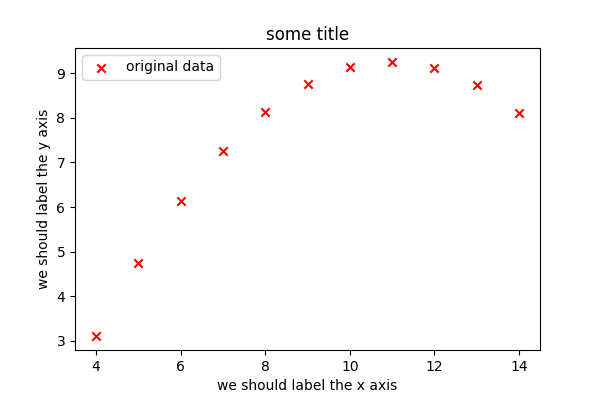
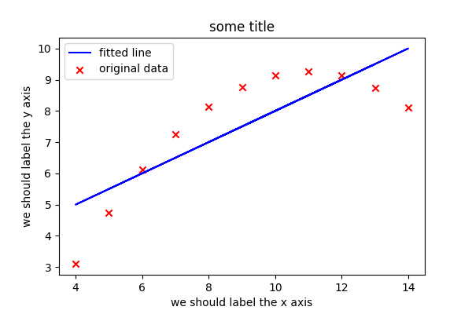
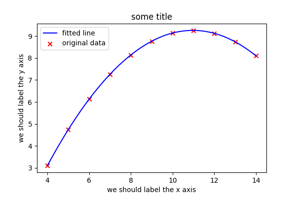

Linear and non-linear regression¶
Objectives
Being able to compute and plot linear and nonlinear regression
Instructor note
15 min presentation/demo
Some plotting libraries can compute and plot linear and non-linear least-squares regression models to input data, see for instance:
In this section we will show one way of computing linear and non-linear fit parameters “outside” of the plot using scipy.stats.linregress and scipy.optimize.curve_fit and then constructing the fit function ourselves. This has the advantage that we then also explicitly know the fit parameters and can use them outside of the plotting for analysis.
Let’s take this example as a starting point:
import matplotlib.pyplot as plt
# this is dataset 2 from
# https://en.wikipedia.org/wiki/Anscombe%27s_quartet
x_values = [10.0, 8.0, 13.0, 9.0, 11.0, 14.0, 6.0, 4.0, 12.0, 7.0, 5.0]
y_values = [9.14, 8.14, 8.74, 8.77, 9.26, 8.10, 6.13, 3.10, 9.13, 7.26, 4.74]
fig, ax = plt.subplots()
fig.set_dpi(100.0)
ax.scatter(x_values, y_values, c="red", marker="x", label="original data")
ax.set_xlabel("we should label the x axis")
ax.set_ylabel("we should label the y axis")
ax.set_title("some title")
ax.legend()

Our starting plot with data that we want to approximate with a non-linear fit function.¶
This is a nice way to obtain the linear fit (also try to print res separately
to see its components):
import matplotlib.pyplot as plt
# stats provides linear regression
from scipy import stats
# this is dataset 2 from
# https://en.wikipedia.org/wiki/Anscombe%27s_quartet
x_values = [10.0, 8.0, 13.0, 9.0, 11.0, 14.0, 6.0, 4.0, 12.0, 7.0, 5.0]
y_values = [9.14, 8.14, 8.74, 8.77, 9.26, 8.10, 6.13, 3.10, 9.13, 7.26, 4.74]
fig, ax = plt.subplots()
fig.set_dpi(100.0)
ax.scatter(x_values, y_values, c="red", marker="x", label="original data")
# compute linear regression
res = stats.linregress(x_values, y_values)
# create fitted values
y_fit = [res.intercept + res.slope*x for x in x_values]
ax.plot(x_values, y_fit, c="blue", label="fitted line")
ax.set_xlabel("we should label the x axis")
ax.set_ylabel("we should label the y axis")
ax.set_title("some title")
ax.legend()

Linear least-squares regression fitted to the data using stats.linregress.¶
There are many ways to obtain parameters for a non-linear or polynomial fit in Python but this is a nice one since it gives the flexibility to define the fit function:
import matplotlib.pyplot as plt
import numpy as np
from scipy.optimize import curve_fit
# this is the function we want to fit
def func(x, a, b, c):
return a*x*x + b*x + c
# this is dataset 2 from
# https://en.wikipedia.org/wiki/Anscombe%27s_quartet
x_values = [10.0, 8.0, 13.0, 9.0, 11.0, 14.0, 6.0, 4.0, 12.0, 7.0, 5.0]
y_values = [9.14, 8.14, 8.74, 8.77, 9.26, 8.10, 6.13, 3.10, 9.13, 7.26, 4.74]
fig, ax = plt.subplots()
fig.set_dpi(100.0)
ax.scatter(x_values, y_values, c="red", marker="x", label="original data")
# non-linear least squares to fit func to data
p_opt, p_cov = curve_fit(func, x_values, y_values)
# these are the fitted values a, b, c
a, b, c = p_opt
# produce 100 values in the range we want to cover along x
x_fit = np.linspace(min(x_values), max(x_values), 100)
# compute fitted y values
y_fit = [func(x, a, b, c) for x in x_fit]
ax.plot(x_fit, y_fit, c="blue", label="fitted line")
ax.set_xlabel("we should label the x axis")
ax.set_ylabel("we should label the y axis")
ax.set_title("some title")
ax.legend()

Non-linear least-squares regression fitted to the data.¶
To understand better what np.linspace does, try reducing the 100 to 5.
Keypoints
SciPy has a wealth of functionality to make this and similar work easier.
It is a good idea to check and browse SciPy and related libraries to check whether what you have in mind does not exist already.